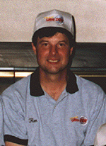

About Ron Steinbrecher

Ron Steinbrecher is a HIGH MASTER pistol shooter from the great state of Pennsylvania. Apart from holding several individual National Records in conventional pistol, he has set records and won National Titles with the UltraDot team. Ron is one of the best all-round pistol shooters in the entire country and one of the nicest fellows as well.With the intention of helping new shooters in the sport, Ron wrote a series of articles for his local club newsletter on pistol shooting fundamentals. He graciously took the time to retype and email each of them to the Bullseye-L forum, where they eventually became archived on Ed Hall's website.
Ron contacted me by email to see if I would be interested in including his writings on the Bullseyepistol.com website. After reading his email, the articles were uploaded to this site within an hour! Thank you for the fine work, Ron!